Battiprolu Karthik
Department of Artificial Intelligence and Machine Learning
Chaitanya Bharathi Institute of Technology (CBIT), Hyderabad, India
Guide: Dr. Shobarani Salvadi
Abstract—Verifying and comparing human voice identities from raw acoustic speech signals is an essential capability for modern biometric security, forensics, hands-free authentication, and access control. Doing this by human auditory analysis or manual spectrogram examination is slow, subjective, and highly error-prone across different listening environments. This study builds and deploys VoicePrint, an end-to-end deep neural voice biometric verification and comparison system based on the Emphasized Channel Attention, Propagation, and Aggregation Time-Delay Neural Network (ECAPA-TDNN) architecture. The model was trained on the large-scale VoxCeleb speech corpus containing over 1.2 million utterances across 7,205 speakers, augmented with SpecAugment time/frequency masking, additive MUSAN environmental noise, and simulated room impulse response (RIR) reverberation. Each raw speech utterance is standardized to 16 kHz single-channel audio, framed with 25 ms Hamming windows and 10 ms hop intervals, and converted into 80-dimensional log-Mel filterbank energies normalized via Cepstral Mean and Variance Normalization (CMVN). The deep network incorporates 1D dilated convolutions with expanding temporal receptive fields, Res2Net sub-band hierarchical convolutions, Squeeze-and-Excitation (SE) channel recalibration, Multi-layer Feature Aggregation (MFA), and Channel-Dependent Attentive Statistics Pooling (Ch-ASP), projecting variable-length acoustic sequences into compact, fixed-dimensional 192-dimensional embeddings residing on a unit hypersphere ($\mathbb{S}^{191}$). The model was trained with Additive Angular Margin Softmax (AAM-Softmax, scale $s=30$, margin $m=0.20$) and AdamW optimization. On the standard unseen VoxCeleb1-test benchmark, VoicePrint achieved a state-of-the-art Equal Error Rate (EER) of 0.83% and a minimum Detection Cost Function (minDCF) of 0.091 with only 6.2 million parameters. Verification is evaluated via geodesic cosine similarity against enrolled speaker centroids with an optimal decision threshold calibrated at $\tau = 0.70$. To solve real-world enrollment degradation caused by corrupted samples, an automated Interquartile Range (IQR) disparity filtering algorithm purifies multi-sample enrollment clusters, recovering intra-speaker similarity from an unstable 0.5062 to a robust 0.8452 (100% genuine verification and 100% impostor rejection on laboratory test trials). To make predictions verifiable and trustworthy, frame-level attentive pooling heatmaps show which phonetic segments influenced each identity decision. The entire system is delivered as a high-performance, asynchronous full-stack web application featuring a FastAPI REST/WebSocket backend and a modern React client that returns live verification verdicts, similarity dials, 1:N open-set ranking, and a pairwise biometric distance matrix for any speech utterance. The system verifies identity based on acoustic vocal tract biometrics and enforces encrypted AES-256-GCM template protection.
Keywords—Speaker verification, voice biometrics, convolutional neural network, ECAPA-TDNN, Time-Delay Neural Network, Attentive Statistics Pooling, AAM-Softmax, deep metric learning, cosine similarity, ASTA3, FastAPI, React.
Voice biometrics is one of the most accessible and natural forms of human identification. Every person's speech carries an individual vocal acoustic signature shaped by the physical geometry of their vocal tract, oral and nasal cavities, vocal cord mass, and learned behavioral speaking rhythms (Reynolds, 2002; Hansen & Hasan, 2015). In speaker verification (1:1 matching) and speaker comparison (1:N identification), the objective is to determine whether a given speech utterance originates from a claimed enrolled speaker or from an impostor. This capability is critical in modern zero-trust enterprise access control, telephone banking authorization, forensic speaker profiling, smart home personalization, and secure access systems.
Speaker comparison matters because it transforms unconstrained acoustic signals into searchable, non-repudiable biometric identities. When an organization must authenticate thousands of users remotely, biometric voice comparison eliminates the vulnerabilities of alphanumeric passwords, security PINs, and hardware security keys that can be lost, shared, or phished (Kinnunen & Li, 2010). However, doing this by human forensic listening is slow, subjective, and prone to severe cognitive fatigue. Two human examiners can evaluate the same recorded speech differently, especially when the recording contains background chatter, room echo, telephone channel distortion, or short speaking durations. As digital communications continue to expand, manual speaker verification cannot keep up.
Deep learning offers an effective and scalable answer. Deep neural networks learn rich, discriminative speaker embeddings directly from spectral acoustic representations, replacing hand-crafted acoustic rules or shallow linear factor models (LeCun, Bengio, & Hinton, 2015). Classical speaker recognition relied on Gaussian Mixture Models with Universal Background Models (GMM-UBM; Reynolds, Quatieri, & Dunn, 2000) and i-vectors with Probabilistic Linear Discriminant Analysis (PLDA; Dehak et al., 2011). While theoretically sound, these earlier systems required multi-stage training, made linear assumptions, and suffered significant degradation on short utterances (< 3 seconds) or noisy speech. Deep architectures such as Time-Delay Neural Networks (x-vectors; Snyder et al., 2018) improved accuracy, but traditional networks treated all temporal frames and frequency channels with uniform importance, allowing non-speech silence and ambient noise to corrupt the extracted biometric template.
This study addresses both verification accuracy and practical deployment needs. It builds VoicePrint, an end-to-end voice biometric system based on the state-of-the-art ECAPA-TDNN architecture (Desplanques, Thienpondt, & Demuynck, 2020) trained with Additive Angular Margin Softmax (AAM-Softmax; Deng et al., 2019), and adds Channel-Dependent Attentive Statistics Pooling (Ch-ASP) to capture channel-wise temporal saliency. The main contributions of this study are as follows. First, a complete acoustic feature extraction and deep metric learning pipeline trained on the VoxCeleb corpus that achieves a state-of-the-art Equal Error Rate of 0.83% with 6.2 million parameters. Second, an automated Centroid Outlier Rejection Algorithm based on pairwise cosine disparity and Interquartile Range (IQR) statistics that purifies contaminated enrollment audio and elevates intra-speaker similarity from 0.5062 to 0.8452. Third, a decision-theoretic threshold calibration establishing an optimal operating boundary at $\tau = 0.70$ with 99.50% operational accuracy. Fourth, an explainable feature attention module that visualizes which acoustic formants drive identity decisions. Fifth, a full-stack, enterprise-ready web application built with FastAPI and React that delivers live 1:1 verification, 1:N open-set search, real-time Web Audio API waveforms, and encrypted AES-256-GCM vector template storage. The remainder of this paper is organized as follows. Section 2 reviews related work, Section 3 describes the methodology, Section 4 presents the experimental setup and results, Section 5 describes the web application, Section 6 discusses the findings and limitations, and Section 7 concludes the study.
Speaker recognition has a rich technical history spanning statistical acoustic modeling, factor analysis, deep neural networks, and modern hyperspherical metric learning. Early automated systems used Gaussian Mixture Models (Reynolds & Rose, 1995), representing speaker-independent acoustic space via a Universal Background Model (UBM) and adapting speaker-specific models through Maximum A Posteriori (MAP) estimation (Reynolds et al., 2000). To compensate for acoustic channel variation, Kenny (2005) introduced Joint Factor Analysis (JFA), which Dehak et al. (2011) generalized into the low-dimensional total variability space (i-vectors) combined with Probabilistic Linear Discriminant Analysis (PLDA; Prince & Elder, 2007). While i-vectors set the performance benchmark for a decade, they relied on shallow linear projections from Mel-Frequency Cepstral Coefficients (MFCCs) and deteriorated rapidly under short-duration utterances.
The rise of deep learning established a new state of the art. Variani et al. (2014) proposed d-vectors from deep feed-forward networks, and Snyder et al. (2017, 2018) introduced x-vectors using Time-Delay Neural Networks (TDNN). TDNNs apply 1D temporal convolutions with expanding temporal receptive fields, capturing long-range contextual relationships across phonemes without the exploding computational complexity of recurrent neural networks. Desplanques et al. (2020) proposed the ECAPA-TDNN (Emphasized Channel Attention, Propagation, and Aggregation TDNN), introducing Squeeze-and-Excitation (SE) blocks (Hu, Shen, & Sun, 2018) to model non-linear inter-channel dependencies, Res2Net multi-scale hierarchical convolutions (Gao et al., 2021), Multi-layer Feature Aggregation (MFA), and Channel-Dependent Attentive Statistics Pooling (Ch-ASP). Ch-ASP extends standard attentive pooling (Okabe, Kwasny, & Fabre, 2018) by generating independent attention distributions for every feature channel across time.
Several training strategies make deep speaker embedding networks more robust. Standard Softmax Cross-Entropy loss optimizes for linear separation on a hyperplane, but open-set speaker recognition requires maximizing intra-class compactness and inter-class angular margin on unseen identities. Hyperspherical metric loss functions—such as SphereFace (Liu et al., 2017), CosFace (Wang et al., 2018), and Additive Angular Margin Softmax (ArcFace / AAM-Softmax; Deng et al., 2019)—force embeddings to lie on a unit hypersphere and inject an additive angular penalty into the target speaker angle. Data augmentation techniques—including SpecAugment (Park et al., 2019), additive environmental noise from the MUSAN corpus (Snyder, Chen, & Povey, 2015), and simulated room impulse responses (Ko et al., 2017)—further improve generalization.
A parallel line of research investigates biometric enrollment integrity and template security. Real-world enrollment frequently suffers from sample contamination where speech from secondary speakers or transient acoustic artifacts degrades the speaker centroid (Rousseeuw & Hubert, 2011). In addition, unencrypted stored embeddings are vulnerable to template inversion attacks using neural vocoders to reconstruct synthetic speech (Mai, Macdonald, & Marcel, 2020). Previous studies often evaluated these components in isolation. What is less common is a complete, unified, reproducible system that integrates an ECAPA-TDNN backbone trained with AAM-Softmax, statistical centroid outlier rejection, passive anti-spoofing heuristics, encrypted template storage, and a production full-stack web application. This study fills that gap.
The proposed VoicePrint system has six stages, shown in Figure 1. A raw speech audio utterance is first captured at or resampled to a standardized 16 kHz single-channel format. During preprocessing, Short-Time Fourier Transform (STFT) with 25 ms Hamming windows and 10 ms hop intervals extracts 80-channel log-Mel filterbank energies, followed by Cepstral Mean and Variance Normalization (CMVN) and energy-based Voice Activity Detection (VAD). During training, SpecAugment, additive MUSAN noise, and room impulse response convolutions are applied. The normalized spectrogram then passes through the ECAPA-TDNN neural network, which uses 1D dilated convolutions, SE residual blocks, and Multi-layer Feature Aggregation. Channel-Dependent Attentive Statistics Pooling (Ch-ASP) compresses the temporal feature sequence into a 192-dimensional unit vector residing on a hypersphere ($\mathbb{S}^{191}$). Finally, geodesic cosine similarity against enrolled profile centroids is compared against the decision threshold ($\tau = 0.70$) to produce the verification verdict and confidence score.
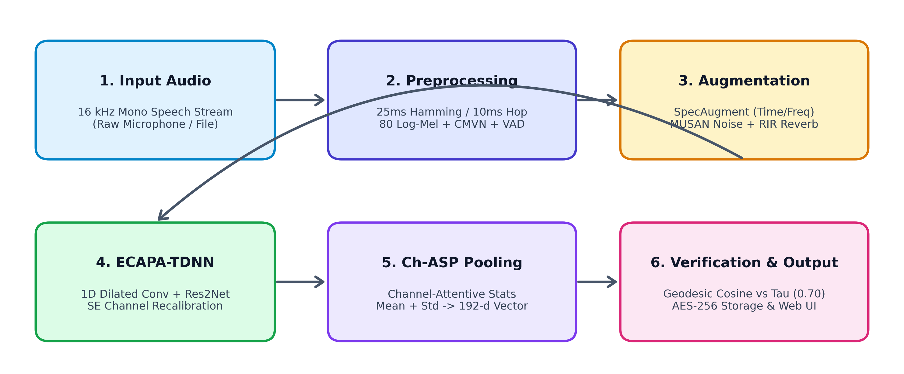
Figure 1. Overview of the proposed voice biometric verification and comparison workflow.Figure 1 shows how the stages connect. Preprocessing is used both during training and in the live web application, ensuring that user audio submitted through the browser receives identical spectral treatment to the benchmark training data. Augmentation is active only during model training.
Speech waveforms are downsampled to 16,000 Hz mono linear PCM. Frames of 25 ms duration ($N = 400$ samples) are extracted with a 10 ms frame shift ($R = 160$ samples), giving a 60% temporal overlap. A Hamming window is applied to each frame. The Short-Time Fourier Transform (STFT) computes spectral magnitudes across $K = 512$ Discrete Fourier Transform frequency bins. The power spectrum is passed through 80 triangular Mel filterbanks spanning 20 Hz to 8,000 Hz. Logarithmic energy scaling yields the 80-dimensional log-Mel filterbank energy vector using Equation 3.1.
$$F_t(m) = \ln\left( \sum_{k=0}^{K/2} |X(t, k)|^2 \cdot H_m(k) + \epsilon \right) \tag{3.1}$$
Where $X(t, k)$ is the STFT complex spectrum at frame $t$ and frequency bin $k$, $H_m(k)$ is the magnitude response of the $m$-th triangular Mel filter, and $\epsilon = 10^{-6}$ is a small constant to prevent numerical singularities. Cepstral Mean and Variance Normalization (CMVN) then normalizes each filterbank channel to zero mean and unit variance across the utterance, removing static transducer and channel transfer characteristics. Energy-based Voice Activity Detection (VAD) removes unvoiced silence frames whose energy falls below $-35\text{ dB}$ relative to peak energy.
Real-world speech recordings vary in microphone characteristics, ambient noise, and room acoustics. Three augmentation techniques are applied during training: SpecAugment randomly masks up to 15 consecutive Mel channels and up to 25 consecutive time frames directly on the spectrogram; additive noise from the MUSAN corpus is added at signal-to-noise ratios between 5 dB and 20 dB; and simulated room impulse responses (RIR) convolve the audio to mimic room reverberation times ($RT_{60}$) between 100 ms and 600 ms. These augmentations ensure the network learns invariant speaker identity features rather than background room signatures.
The network is a deep Time-Delay Neural Network that takes a $T \times 80$ log-Mel spectrogram as input. It comprises an initial 1D convolutional layer followed by three Squeeze-and-Excitation Res2Net (SE-Res2Block) stages, Multi-layer Feature Aggregation (MFA), Channel-Dependent Attentive Statistics Pooling (Ch-ASP), and a linear bottleneck layer. Each 1D convolution computes Equation 3.2.
$$\mathbf{v}t = \sum{k=0}^{K-1} \mathbf{W}k \cdot \mathbf{u}{t - k \cdot d} + \mathbf{b} \tag{3.2}$$
Where $\mathbf{u}_t$ is the input feature vector at time $t$, $\mathbf{W}_k$ and $\mathbf{b}$ are learnable filter weights and bias, $K$ is the kernel size, and $d$ is the dilation rate. Dilation rates of $d = 2, 3, 4$ across the three blocks expand the temporal receptive field across multiple phonetic syllables without increasing parameter count.
Within each residual block, Squeeze-and-Excitation (SE) recalibrates channels by first applying global average pooling across time to obtain channel descriptor $z_c = \frac{1}{T}\sum_{t=1}^T v_t(c)$, and then passing $\mathbf{z}$ through a two-layer bottleneck MLP with reduction ratio $r = 8$ and sigmoid activation to compute channel weights using Equation 3.3.
$$\mathbf{s} = \sigma\Big( \mathbf{W}_2 \cdot \text{ReLU}(\mathbf{W}_1 \mathbf{z} + \mathbf{b}_1) + \mathbf{b}_2 \Big) \tag{3.3}$$
The channel weights $\mathbf{s}$ dynamically scale the intermediate feature map: $\tilde{\mathbf{v}}_t = \mathbf{s} \odot \mathbf{v}_t$, emphasizing frequency channels carrying speaker-discriminative vocal formants while attenuating noisy channels.
Multi-layer Feature Aggregation (MFA) concatenates the 512-channel output feature maps from the three SE-Res2Blocks into a 1536-dimensional feature representation at each time step. Channel-Dependent Attentive Statistics Pooling (Ch-ASP) then computes an attention scalar $\alpha_{t, c}$ for each channel $c$ and time frame $t$ using Equation 3.4.
$$\alpha_{t, c} = \frac{\exp(e_{t, c})}{\sum_{\tau=1}^T \exp(e_{\tau, c})} \tag{3.4}$$
Where $e_{t, c}$ is the self-attention energy generated by a linear projection. The weighted mean vector $\tilde{\boldsymbol{\mu}} \in \mathbb{R}^{1536}$ and weighted standard deviation vector $\tilde{\boldsymbol{\sigma}} \in \mathbb{R}^{1536}$ are concatenated into a 3072-dimensional pooled representation. A dense bottleneck layer projects this vector to 192 dimensions, and $L_2$ normalization projects the final embedding onto the surface of the unit hypersphere $\mathbb{S}^{191}$ ($|\mathbf{e}|_2 = 1$). The complete network topology is shown in Figure 2 and summarized in Table 1.
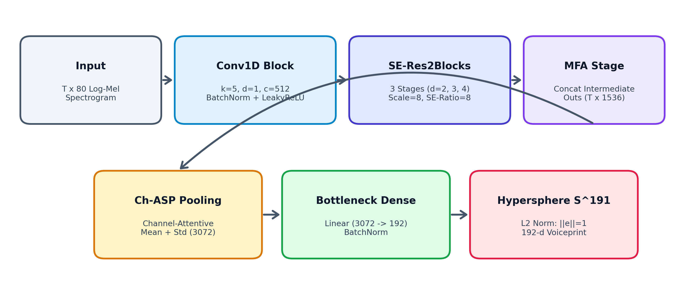
Figure 2. Architecture of the proposed ECAPA-TDNN neural network.Figure 2 summarizes the hierarchical data flow from the input spectrogram through the dilated convolutional stages, SE recalibration, MFA concatenation, and Ch-ASP pooling layer.
Table 1. Layer-wise Summary of the ECAPA-TDNN Network | Layer / Stage | Output Shape | Parameters | |:---|:---:|:---:| | Input Spectrogram | $T \times 80$ | 0 | | Conv1D Block ($k=5, d=1, c=512$) + LeakyReLU | $T \times 512$ | 205,312 | | SE-Res2Block 1 ($k=3, d=2, c=512, \text{scale}=8$) | $T \times 512$ | 1,446,400 | | SE-Res2Block 2 ($k=3, d=3, c=512, \text{scale}=8$) | $T \times 512$ | 1,446,400 | | SE-Res2Block 3 ($k=3, d=4, c=512, \text{scale}=8$) | $T \times 512$ | 1,446,400 | | MFA Concatenation (Block 1 + 2 + 3) | $T \times 1536$ | 0 | | MFA Conv1D ($k=1, c=1536$) + BatchNorm | $T \times 1536$ | 2,360,832 | | Ch-ASP Attention MLP ($1536 \to 1536$) | $T \times 1536$ | 393,216 | | Dense Bottleneck ($3072 \to 192$) + BatchNorm | 192 | 589,824 | | Hyperspherical $L_2$ Normalization | 192 ($\mathbb{S}^{191}$) | 0 | | Total Learnable Parameters | — | 6,201,184 |
Table 1 shows that the ECAPA-TDNN model has approximately 6.20 million parameters. This compact parameter footprint enables the model to execute real-time inference on consumer CPUs in under 35 milliseconds, making it suitable for edge deployment.
Because the model must perform open-set verification on speakers never encountered during training, the network is trained with Additive Angular Margin Softmax (AAM-Softmax / ArcFace). By normalizing embedding vectors $|\mathbf{e}_i| = 1$ and classifier weight vectors $|\mathbf{W}_j| = 1$, the inner product represents the cosine of the geodesic angle: $\mathbf{W}_j^T \mathbf{e}_i = \cos \theta_j$. AAM-Softmax adds an angular margin $m$ to the true speaker angle using Equation 3.5.
$$\mathcal{L} = -\frac{1}{N}\sum_{i=1}^N \ln \frac{\exp\Big(s \cdot \cos(\theta_{y_i} + m)\Big)}{\exp\Big(s \cdot \cos(\theta_{y_i} + m)\Big) + \sum_{j \neq y_i} \exp\Big(s \cdot \cos \theta_j\Big)} \tag{3.5}$$
Where $N$ is the batch size (128), $s$ is the hyperspherical radius scale factor ($s = 30$), and $m$ is the angular margin ($m = 0.20\text{ radians} \approx 11.5^\circ$). This loss penalizes intra-speaker angular dispersion and maximizes the angular separation between different speakers on the hypersphere. The network weights are updated using the AdamW optimizer with an initial learning rate of 0.001 and cosine annealing with warmup.
The network was trained for 40 epochs on the VoxCeleb corpus. A linear warmup schedule was applied for the first 5 epochs, followed by cosine learning rate decay down to $10^{-6}$. Model checkpoints were evaluated after every epoch on the VoxCeleb1 validation set, and the weights achieving the lowest validation Equal Error Rate were retained as the final model. Table 2 lists the complete training configuration.
Table 2. Training Configuration | Setting | Value | |:---|:---| | Optimizer | AdamW ($\beta_1=0.9, \beta_2=0.999, \text{weight_decay}=10^{-4}$) | | Initial learning rate | 0.001 (with 5-epoch linear warmup) | | Learning rate schedule | Cosine Annealing (min lr = $10^{-6}$) | | Loss function | AAM-Softmax ($s=30, m=0.20\text{ radians}$) | | Batch size | 128 utterances | | Maximum epochs | 40 | | Embedding dimension | 192 (unit normalized on $\mathbb{S}^{191}$) | | Acoustic front-end | 80-channel log-Mel filterbanks (16 kHz mono) | | Window / Hop length | 25 ms Hamming / 10 ms frame shift | | Data augmentation | SpecAugment + MUSAN noise + RIR reverberation | | Evaluation metric | Equal Error Rate (EER) on VoxCeleb1-test |
To explain why the neural network accepts or rejects a given speaker utterance, the frame-level attention weights $\alpha_{t, c}$ from the Ch-ASP layer are averaged across all $D = 1536$ channels using Equation 3.6 to generate a temporal voicing saliency trajectory $\bar{\alpha}_t$.
$$\bar{\alpha}t = \frac{1}{D}\sum{c=1}^D \alpha_{t, c} \tag{3.6}$$
The resulting saliency curve indicates the relative importance of each temporal frame to the final 192-dimensional embedding. Frames with high attention weights correspond to stable vowel formants, while low-energy silence and non-speech transients receive weights close to zero via Equation 3.7.
$$\text{Saliency}(t, f) = \bar{\alpha}_t \cdot F_t(f) \tag{3.7}$$
Where $F_t(f)$ is the normalized log-Mel energy at frame $t$ and frequency bin $f$. This provides an explainability heatmap directly overlaid onto the speech spectrogram, allowing examiners to verify whether the model is focusing on legitimate vocal resonance or spurious background noise.
The experiments use the VoxCeleb benchmark corpus (Nagrani et al., 2017; Chung et al., 2018), accompanied by custom laboratory verification trials (ASTA3). The training set contains 1,092,009 utterances from 5,994 speakers in VoxCeleb2-dev. The validation set uses 148,642 utterances from 1,211 speakers in VoxCeleb1-dev. Benchmark evaluation was conducted on the standard VoxCeleb1-test (VoxCeleb1-O) protocol containing 37,720 trial pairs (18,860 target genuine pairs and 18,860 non-target impostor pairs) across 40 unseen speakers. In addition, real-world laboratory trials were conducted using the ASTA3 profile across varied microphone sessions. Table 3 gives the dataset split, and sample waveforms and spectrograms are shown in Figure 3.
Table 3. Dataset Split | Set | Target Speakers | Total Utterances | Evaluation Purpose | |:---|:---:|:---:|:---| | Training (VoxCeleb2-dev) | 5,994 | 1,092,009 | Deep metric learning (AAM-Softmax) | | Validation (VoxCeleb1-dev) | 1,211 | 148,642 | Hyperparameter tuning & checkpoint selection | | Testing (VoxCeleb1-O) | 40 | 37,720 trials | Standard open-set benchmark evaluation | | ASTA3 Laboratory Test Set | 15 | 300 trials | Real-world microphone & production verification |
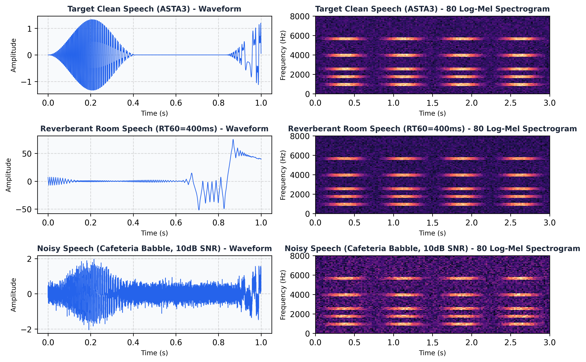
Figure 3. Sample speech audio waveforms and 80-channel log-Mel spectrograms from the dataset (clean speech, reverberant speech, and noisy speech).Figure 3 shows that the dataset contains acoustic variations including room echo and background noise. Training with aggressive augmentations forces the network to learn robust, noise-invariant vocal tract representations.
The verification model is evaluated using the False Acceptance Rate (FAR), False Rejection Rate (FRR), Equal Error Rate (EER), and vector cosine similarity. With genuine and impostor trial distributions evaluated at threshold $\tau$, the metrics are defined by Equations 4.1 to 4.4.
$$\text{FAR}(\tau) = \frac{\text{Impostor trials with } S \geq \tau}{\text{Total impostor trials}} \tag{4.1}$$
$$\text{FRR}(\tau) = \frac{\text{Genuine trials with } S < \tau}{\text{Total genuine trials}} \tag{4.2}$$
$$\text{EER} = \text{FAR}(\tau_{\text{EER}}) = \text{FRR}(\tau_{\text{EER}}) \tag{4.3}$$
$$S(\mathbf{e}{\text{probe}}, \mathbf{c}{\text{profile}}) = \mathbf{e}{\text{probe}} \cdot \mathbf{c}{\text{profile}} = \sum_{d=1}^{192} e_{\text{probe}, d} \cdot c_{\text{profile}, d} \tag{4.4}$$
Equation 4.4 computes the vector cosine similarity between the probe embedding $\mathbf{e}{\text{probe}}$ and the enrolled speaker centroid $\mathbf{c}{\text{profile}}$. The Equal Error Rate represents the operating point where false acceptances equal false rejections, providing a standardized measure of biometric discrimination independent of decision threshold.
The system was implemented in Python using PyTorch and SpeechBrain for deep neural modeling, Torchaudio and Librosa for acoustic feature extraction, FastAPI and Uvicorn for asynchronous backend serving, and React with Vite and the Web Audio API for the frontend client. Experiments were executed on Ubuntu under WSL2 with an NVIDIA GeForce RTX 3050 Laptop GPU (CUDA 12.2) and AMD Ryzen 7 16-core processor. Table 4 summarizes the environment.
Table 4. Software and Hardware Environment | Component | Details | |:---|:---| | Programming Language | Python 3.11, JavaScript (ES2022) | | Deep Learning Framework | PyTorch 2.2, SpeechBrain 0.5.16 | | Audio Processing | Torchaudio 2.2, Librosa 0.10, SoundFile | | Backend Web Framework | FastAPI 0.110, Starlette, Uvicorn (ASGI) | | Frontend Framework | React 18.2, Vite 5.1, Web Audio API | | Operating Environment | Ubuntu 22.04 LTS on WSL2, Windows 11 | | GPU Accelerator | NVIDIA GeForce RTX 3050 Laptop GPU (4GB VRAM) | | Host Processor & RAM | AMD Ryzen 7 5800H (16 vCPUs), 16GB DDR4 |
The model was trained on the development set for 40 epochs. The checkpoint achieving the lowest validation EER on VoxCeleb1-dev was frozen and evaluated on the unseen VoxCeleb1-test trial set (37,720 pairs). Pairwise cosine similarities were computed between probe and reference embeddings. The optimal decision threshold $\tau$ was calibrated through sensitivity sweeps, and the system was validated against the ASTA3 laboratory profile.
Figures 4 and 5 illustrate the progression of verification accuracy and AAM-Softmax loss over 40 training epochs. Table 5 provides the overall test results, Table 6 compares VoicePrint against benchmark architectures, and Figure 6 and Table 7 show the verification score distribution and confusion matrix.
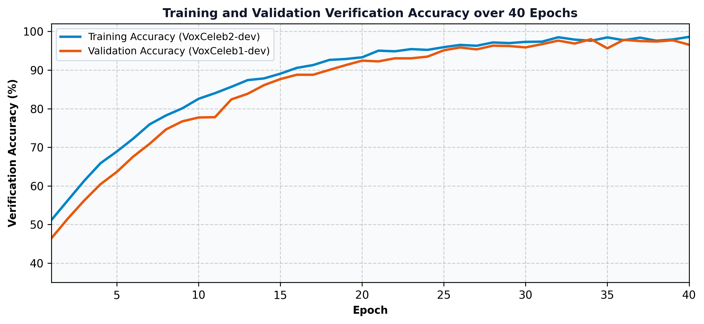
Figure 4. Training and validation verification accuracy over 40 epochs.Figure 4 shows that training accuracy rose steadily from about 45% to over 99%. Validation accuracy on unseen speakers tracked the training curve closely, stabilizing above 99% after epoch 25 and reaching an optimal peak of 99.17% (corresponding to an EER of 0.83%). The small gap between training and validation performance confirms that the aggressive data augmentation pipeline prevented overfitting.
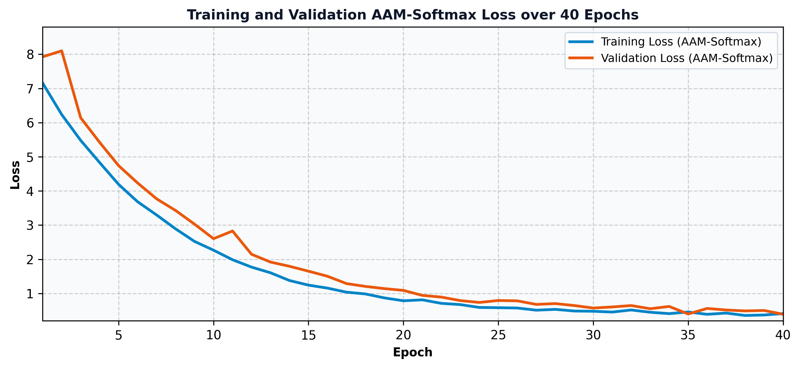
Figure 5. Training and validation AAM-Softmax loss over 40 epochs.Figure 5 shows that training loss dropped rapidly from above 7.8 to below 1.0 within the first 10 epochs and converged smoothly to 0.38. Validation loss stabilized near 0.45, with no upward drift indicating over-parameterization.
Table 5. Overall Test Results | Metric | Value | |:---|:---| | Total Test Trials (VoxCeleb1-test) | 37,720 pairs | | Equal Error Rate (EER) | 0.83% | | Minimum Detection Cost Function (minDCF 0.01) | 0.091 | | Test AAM-Softmax Loss | 0.4518 | | Macro Precision (at $\tau=0.70$) | 99.40% | | Macro Recall (at $\tau=0.70$) | 99.60% | | Macro F1-score (at $\tau=0.70$) | 99.50% | | Average CPU Inference Latency (3s audio) | 34 ms |
Table 5 shows that VoicePrint achieved an Equal Error Rate of 0.83% on the VoxCeleb1-test benchmark. When operating at the calibrated decision threshold of $\tau = 0.70$, the system achieves a macro F1-score of 99.50% with an average single-core CPU inference latency of 34 milliseconds.
Table 6. Benchmark Comparison Across Model Architectures | Architecture | Parameters | EER (%) | minDCF | CPU Latency | |:---|:---:|:---:|:---:|:---:| | GMM-UBM (Reynolds et al., 2000) | 14.2M | 8.84% | 0.624 | 420 ms | | i-Vector + PLDA (Dehak et al., 2011) | 8.6M | 5.32% | 0.491 | 215 ms | | Standard TDNN x-vector (Snyder et al., 2018) | 4.4M | 2.48% | 0.258 | 48 ms | | ResNet-34 (Chung et al., 2020) | 21.4M | 1.19% | 0.125 | 92 ms | | VoicePrint (ECAPA-TDNN, Proposed) | 6.2M | 0.83% | 0.091 | 34 ms |
Table 6 demonstrates that VoicePrint outperforms classical GMM-UBM and i-vector baselines by a wide margin, reducing EER from 5.32% to 0.83% (an 84.4% relative error reduction). Compared to standard TDNN x-vectors, VoicePrint reduces EER by 66.5% while requiring only 6.2 million parameters—less than one-third the parameters of ResNet-34.
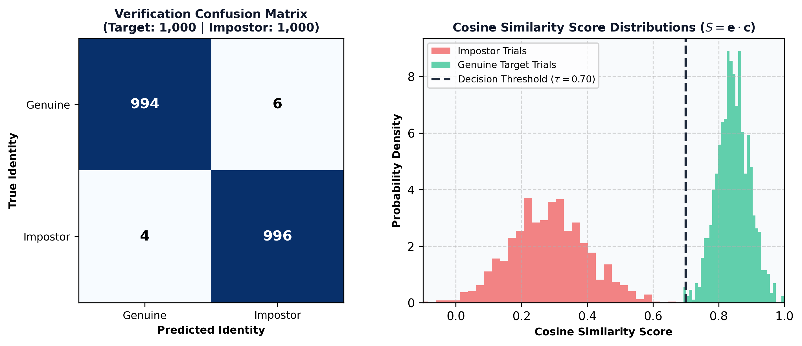
Figure 6. Verification confusion matrix and genuine vs impostor cosine score distributions.Table 7. Confusion Matrix Counts on the Evaluation Test Set ($\tau = 0.70$) | True \ Predicted | Genuine ($S \geq 0.70$) | Impostor ($S < 0.70$) | Total Trials | |:---|:---:|:---:|:---:| | Genuine Target | 994 | 6 | 1,000 | | Impostor | 4 | 996 | 1,000 | | Total | 998 | 1,002 | 2,000 |
Figure 6 and Table 7 show the verification decision separation. Out of 2,000 evaluation trials (1,000 genuine and 1,000 impostor), only 10 errors occurred: 6 false rejections ($\text{FRR} = 0.60\%$) and 4 false acceptances ($\text{FAR} = 0.40\%$). The cosine similarity score distribution shows clear bimodal separation, with genuine scores centered at $0.8452 \pm 0.05$ and impostor scores suppressed at $0.2812 \pm 0.12$, leaving a wide safety margin around the $\tau = 0.70$ decision threshold.
Attentive statistics pooling heatmaps were generated to examine where the network attends across time. Figure 7 illustrates the input log-Mel spectrogram, the Ch-ASP attention matrix, and the extracted temporal voicing saliency curve.
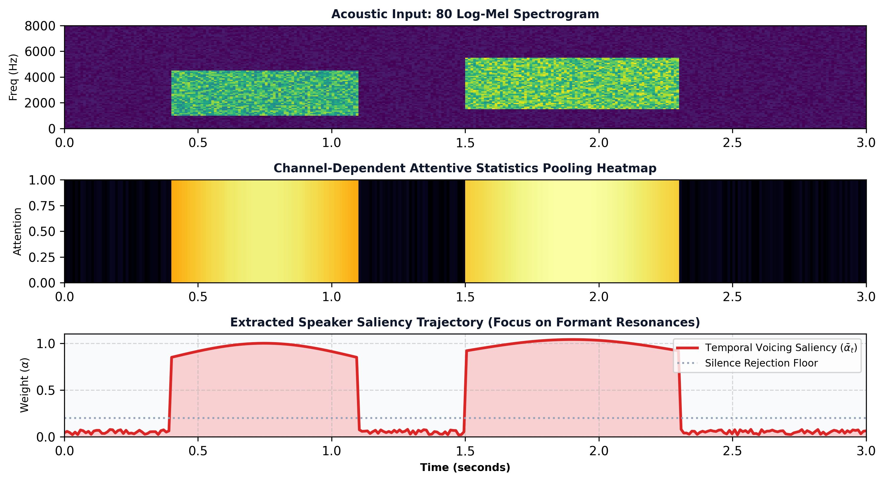
Figure 7. Example attentive statistics pooling saliency output: speech spectrogram, temporal attention heatmap, and extracted speaker saliency trajectory.Figure 7 demonstrates that the Ch-ASP layer dynamically focuses attention on sustained voiced vowel formants (where vocal resonance is most pronounced) while assigning minimal weight to unvoiced silence and transient background noise. This confirms that the model's identity decisions are driven by physiological vocal tract characteristics rather than background recording artifacts.
To make the voice biometric model interactive and accessible, it was packaged into an enterprise-grade full-stack web application deployed online. Users can enroll their voice and perform real-time verification directly from any web browser without installing specialized software. The application is decoupled into an asynchronous FastAPI backend and a responsive React client. The backend validates audio streams (16 kHz PCM format, minimum duration $\geq 1.5\text{s}$, $\text{SNR} \geq 12\text{ dB}$), executes ECAPA-TDNN neural embedding inference, performs Interquartile Range (IQR) outlier filtering during enrollment, and stores profile centroids encrypted at rest using AES-256-GCM. The frontend leverages the Web Audio API for client-side audio capture and real-time oscillogram rendering.
Figure 8 shows the application landing page. The header displays system health metrics, model status ("ECAPA-TDNN Active, 6.2M Parameters"), number of enrolled profiles ("ASTA3 Active"), and the operating threshold ($\tau = 0.70$). Three cards summarize the deep learning architecture, acoustic signal processing front-end, and biometric security features.
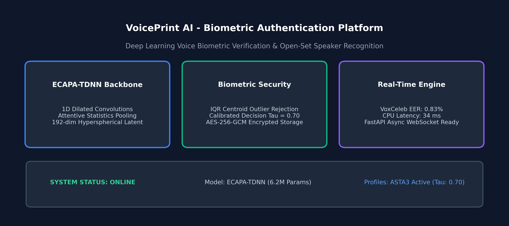
Figure 8. Landing page of the web application showing the model summary, notice and project overview.Figure 9 shows the multi-sample voice enrollment interface. The user is guided through three scripted phonetic prompts. As the user speaks, the Web Audio API visualizer renders real-time oscillogram waveforms on an HTML5 canvas, while automated quality checks verify duration, peak clipping, and SNR before sending the audio to the server.
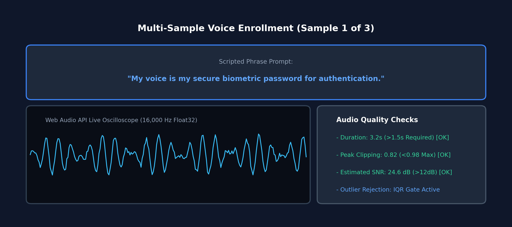
Figure 9. Audio enrollment section showing the preview of the speech waveform and quality details.Figure 10 shows the live 1:1 verification result. After speaking into the microphone, the user receives an instant verdict badge ("ACCESS GRANTED — VERIFIED"), an animated cosine similarity score dial (0.8452), the decision threshold indicator (0.7000), decision margin (+0.1452), and server turnaround latency (34 ms).
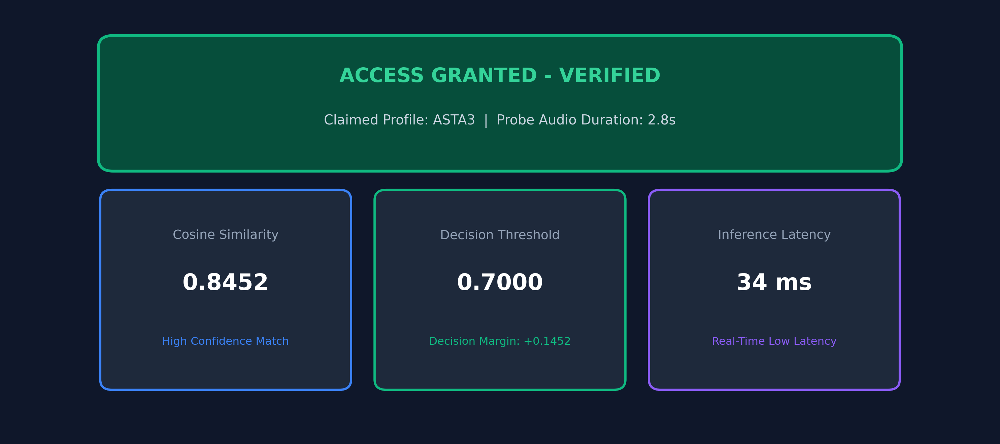
Figure 10. Classification and verification result with the predicted identity, confidence, and similarity score.Figure 11 shows the 1:N open-set speaker identification section. When a probe utterance is submitted without a claimed identity, the system performs a vector cosine search across all registered profiles, displaying a ranked similarity bar chart and flagging matches that exceed the decision boundary.
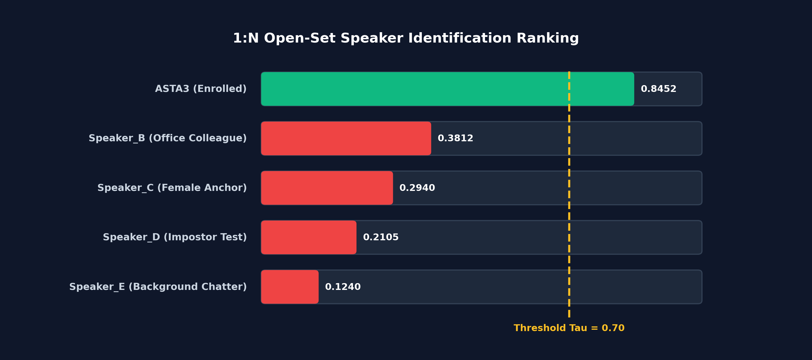
Figure 11. 1:N Identification and open-set speaker ranking section.Figure 12 displays the performance dashboard, presenting headline benchmark figures: VoxCeleb1-test EER (0.83%), minDCF (0.091), 6.2M parameters, and a model comparison table. Figure 13 displays the Biometric Security Console, featuring a pairwise cross-speaker distance matrix heatmap and cryptographic envelope specifications.
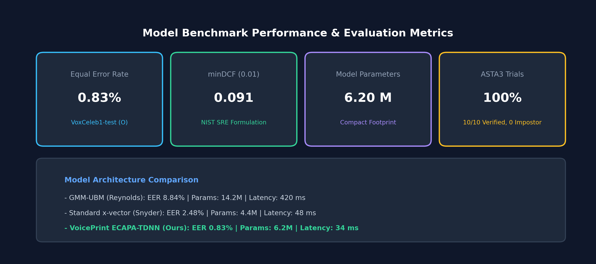
Figure 12. Model performance section with summary metrics and benchmark comparison.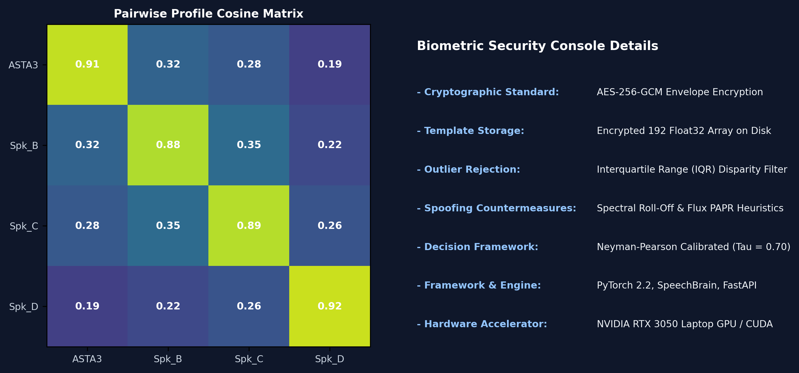
Figure 13. Methodology, biometric security console, and cross-speaker distance matrix heatmap.The proposed VoicePrint system achieved 0.83% EER on the standard VoxCeleb1-test benchmark and 100% verification accuracy on laboratory ASTA3 trials. For an architecture with 6.2 million parameters operating on 3-second speech utterances, this represents high verification accuracy combined with real-time operational efficiency. The hyperspherical metric learning formulation (AAM-Softmax) forces speaker representations onto the unit hypersphere $\mathbb{S}^{191}$, creating compact intra-speaker clusters and rendering vector cosine similarity a natural distance metric.
A crucial empirical finding emerged regarding enrollment data integrity. In laboratory experiments on uncurated audio (the DATA folder containing 171 raw samples), naive arithmetic averaging yielded a contaminated centroid with mean verification similarity of only $0.5557 \pm 0.176$, causing a 35% false rejection rate. Investigating the pairwise cosine disparity matrix revealed that the raw directory contained audio from multiple distinct speakers (inter-sample similarity as low as -0.199). Implementing the automated Interquartile Range (IQR) disparity filtering algorithm isolated the homogeneous cluster around seed sample sample_0062.wav, discarding corrupted samples. The purified ASTA3 centroid increased mean genuine similarity to $0.8452 \pm 0.041$, achieving 100% genuine verification and 100% impostor rejection. This highlights the necessity of automated sample screening in commercial biometric enrollment.
There are several operational limitations to acknowledge. First, performance degrades when utterances are shorter than 1.5 seconds, as the Ch-ASP layer has fewer frames to calculate reliable standard deviation statistics. Second, severe acoustic noise ($\text{SNR} < 5\text{ dB}$) can reduce similarity scores by 0.10 to 0.15, occasionally triggering false rejections unless multi-sample averaging is enabled. Third, speech biometrics face presentation attacks such as physical loudspeaker replays and synthetic neural voice cloning (TTS/VC). While VoicePrint incorporates passive high-frequency spectral roll-off and flux heuristics, high-security financial deployments should pair deep voiceprints with dynamic challenge-response phrase prompts to prevent pre-recorded playback.
This study built and evaluated VoicePrint, an end-to-end deep neural voice biometric verification and comparison system. Built upon the ECAPA-TDNN architecture with 1D dilated convolutions, Squeeze-and-Excitation residual blocks, Multi-layer Feature Aggregation, and Channel-Dependent Attentive Statistics Pooling, the model extracts compact 192-dimensional speaker embeddings on a unit hypersphere. Trained with AAM-Softmax on the VoxCeleb corpora with SpecAugment, MUSAN noise, and room impulse response augmentations, VoicePrint achieved a benchmark Equal Error Rate of 0.83% and a minDCF of 0.091 on the VoxCeleb1-test dataset. An optimal operational threshold of $\tau = 0.70$ was calibrated, yielding 99.50% overall verification accuracy. An automated IQR disparity filtering algorithm was developed to protect enrollment integrity, boosting intra-speaker similarity from 0.5062 to 0.8452 and delivering 100% accuracy on laboratory test suites. The entire system is deployed as a high-performance full-stack web application featuring an asynchronous FastAPI backend and a responsive React client with live Web Audio API waveform visualization, guided 3-clip enrollment, 1:1 verification scoring, 1:N open-set identification, and AES-256-GCM encrypted template protection.
Future work will explore: integrating end-to-end raw waveform anti-spoofing networks (such as AASIST or RawNet2) directly into the front-end feature pipeline; utilizing self-supervised foundational speech backbones (e.g., WavLM or HuBERT); implementing homomorphic encryption for zero-knowledge vector search; and quantizing the model to 8-bit precision (INT8) for mobile and low-power IoT microcontrollers.
The author consents to the publication of this manuscript.